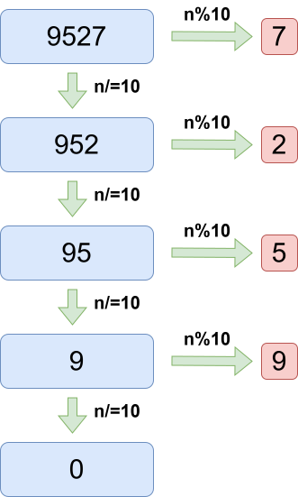

有的题目，需要我们取出数字的每一位进行一些操作。对于固定位数的数字，我们已经学习过如何处理。
例如对于三位数 n%10 就是个位，n/10%10 或者 n%100/10 是十位，n/100 是百位。
但当数字的位数不固定的时候，这个方法便不再奏效。那么就请出我们的杀手锏--数字拆分。
数字拆分堪称大杀器，核心代码只有短短三行，却可以解决众多相关问题，例如：数字反转，数位之和，某个数字在数字中的出现次数等。
首先，我们很容易发现一个规律：不管一个数字是几位数，对
例如：
接着，我们对这个数除以
例如：
聪明的同学就会想到啦，当我们扔掉个位，那么原来的十位就变成了现在的个位。我们又可以通过对

那么使用 while 循环，就可以完成这个操作啦。
核心代码
1while(n){2 int t=n%10;//每次拆除的位3 n/=10;4}
所谓数字反转，顾名思义，就是将一个数字倒过来。例如
我们在 数字拆分 时就是从个位开始拆分的。所以我们直接输出拆出来的每一位即可。
x1
3using namespace std;4
5int main(){6 int n;7 cin>>n;8 while(n){9 int t=n%10;10 cout<<t;11 n/=10;12 }13}但是，很快我们会发现一些问题。对于
当我们想把
xxxxxxxxxx151
3using namespace std;4
5int main(){6 int n;7 cin>>n;8 int sum=0;9 while(n){10 int t=n%10;11 sum=sum*10+t;12 n/=10;13 }14 cout<<sum;15}
特判负数的情况，把负数当成正数处理，并打上标记。最后输出的时候加上负号即可。
xxxxxxxxxx211
3using namespace std;4
5int main(){6 int n;7 cin>>n;8 int sign=0;9 if(n<0){10 sign=1;11 n=-n;12 }13 int ans=0;14 while(n){15 int t=n%10;16 ans=ans*10+t;17 n/=10;18 } 19 if(sign) cout<<"-"; 20 cout<<ans;21}
数字拆分时，累加拆分出的值即可。
xxxxxxxxxx201
3using namespace std;4
5int main(){6 int n;7 cin>>n;8 for(int i=1;i<=n;i++){9 int x;10 cin>>x;11 int sum=0;12 while(x){13 sum+=x%10;14 x/=10;15 }16 if(sum%7==0) cout<<"Yes\n";17 else cout<<"No\n";18 } 19 cout<<sum;20}
数字拆分，然后判断拆出的位是不是
xxxxxxxxxx171
3using namespace std;4
5int main(){6 long long m;7 int k;8 cin>>m>>k;9 int cnt=0;10 while(m){11 if(m%10==3) cnt++;12 m/=10;13 }14 if(cnt==k) cout<<"YES";15 else cout<<"NO";16 return 0;17}